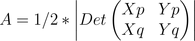

Determinantes e Polígonos

Área de triângulos
Áreas e Determinantes são conceitos intimamente relacionados.
Por exemplo, dados dois pontos no plano, P e Q, com coordenadas (Xp,Yp) e (Xq,Yq), respectivamente, a área A do triângulo formado entre P e Q e a origem é dada por:
A seguir, será explicada a necessidade de se considerar o valor absoluto do determinante.
Clique o botão Criar Ponto, na ferramenta ao lado, e crie dois pontos em qualquer lugar do plano cartesiano.
Construir triânguloEsses pontos (e suas respectivas coordenadas) serão usados nos item “a” e “b” da Questão 1.
Para que o determinante seja positivo, deve-se satisfazer a seguinte condição: ao girar a semirreta OP no sentido anti-horário até que ela atinja a semirreta OQ, é necessário percorrer um ângulo menor que 180 graus. Se os pontos P (correspondente à primeira linha da matriz) e Q (corresponde à segunda linha da matriz) forem escolhidos dessa forma, pode-se omitir o valor absoluto da fórmula apresentada no início desta parte.
Alternativamente, ao se percorrer o triângulo OPQ no sentido anti-horário a partir do vértice O, deve-se passar, antes, pelo vértice P (correspondente à primeira linha da matriz) e, depois, pelo vértice Q (correspondente à segunda linha da matriz).
Se você deseja entender o porquê dessa igualdade, estude com o software "Determinantes e Áreas”.
Continuar